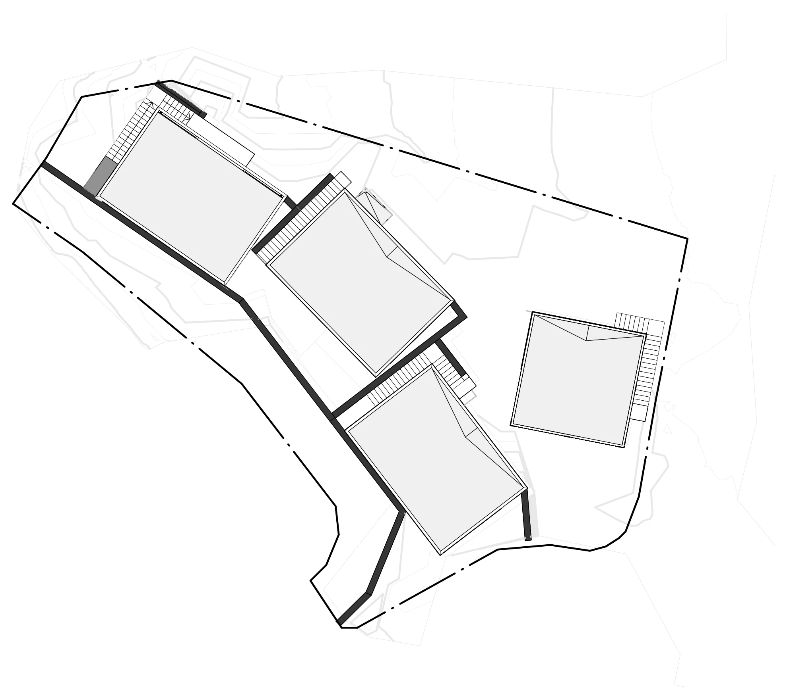

Квартира ЖК Воксхолл
- Тип Квартира
- Площадь 93.6 м²
- Локация г. Москва, Россия
- Статус В реализации
Квартира собрана на спокойной нейтральной палитре: светлые плоскости, встроенное хранение, теплое дерево и мягкий свет.

Проекты
Квартира собрана на спокойной нейтральной палитре: светлые плоскости, встроенное хранение, теплое дерево и мягкий свет.
Темный интерьер без декоративной перегрузки: крупные плоскости, скрытый свет, дерево и серый камень.

Теплый интерьер с прямой композицией: дерево, светлые стены, мягкий свет и спокойная общая зона.

Небольшая квартира собрана крупными встроенными объемами: хранение, кухня и гостиная работают без визуального шума.

Загородный интерьер держится на дереве и простых плоскостях: современная версия шале без лишней декоративности.

Комплекс из четырех вилл в тропической зелени: белые объемы с бронзовой окантовкой, открытые террасы и бассейны.

Реконструкция собирает фасад в более строгий городской образ: светлая штукатурка, черный металл, витражи и терраса.
Компактный частный дом с ясным объемом: светлый верх, темный первый уровень и крупные проемы.